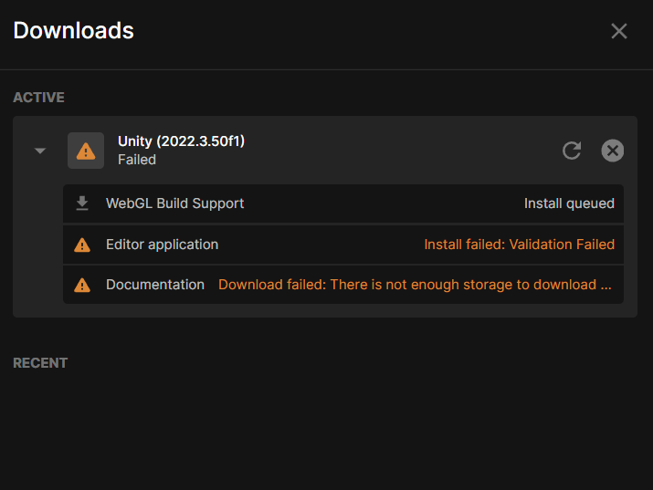
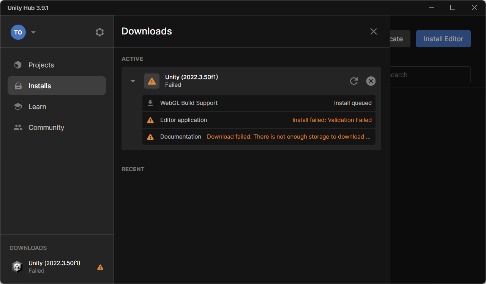
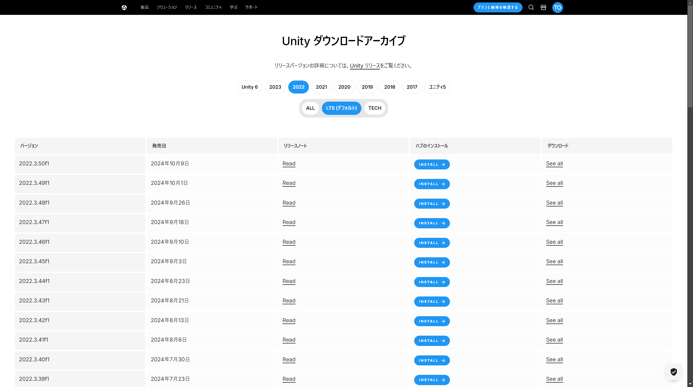

#UnityHub
会社PCでUnity Hubインストール時のエラー解決法
Unityを会社のPCにインストールしようとすると、時々ネットワークやセキュリティ設定による問題が発生することがあります。私もこのような状況を経験しました。今回は、Windows 11の会社PCでUnity Hubを使ってインストールする際に遭遇したエラーについて、解決までのステップを紹介します。
エラー発生の背景
会社PCでは、通常、セキュリティやネットワークに対する制約が強化されています。このような環境でUnity Hubを使用してUnityをインストールすると、次のような要因が原因でエラーが発生することがあります。
プロキシ設定：会社のネットワークがインターネットアクセスを管理している場合、Unity Hubがサーバーに接続できないことがある。
ファイアウォールの設定：セキュリティを強化するために設定されたファイアウォールがUnity Hubの通信をブロックしてしまう可能性がある。
アンチウイルスソフト：特定のファイルや通信を安全でないとみなして、Unity Hubのダウンロードやインストールを妨げることがある。
Unity公式サポートページでは、これらの原因について詳しく説明されています。以下が参考リンクです。
Unityエディターがダウンロードできない問題の解決方法
解決方法：Unity Hubを使わないでインストール

私の場合、Unity Hubを使用したインストールではなく、Unityのアーカイブページから直接インストールすることで、エラーを回避することができました。
1. Hubを使わないインストール方法
Unityの公式アーカイブページでは、過去のバージョンや特定のバージョンのUnityエディターを直接ダウンロードすることが可能です。この方法では、会社のネットワーク制約にかかわらず、手動でUnityをインストールできます。
Unityダウンロードアーカイブページ
2. 手順
上記のアーカイブページから必要なバージョンを選択し、ダウンロードします。ダウンロードしたインストーラーを使用して、通常通りPCにインストールします。
3. インストール後の設定
Unity Hubで管理できない点は少し手間ですが、インストール後にライセンス認証やプロジェクトの設定を手動で行うことで、問題なく開発を開始できます。
まとめ
会社PCなどのネットワーク制約が厳しい環境では、Unity Hubを使用したインストールでエラーが発生することがありますが、アーカイブから直接インストールすることで解決できる場合があります。プロキシやファイアウォールの設定変更が難しい場合、今回のようにUnityを直接インストールする方法が非常に有効です。また、もしこれでも問題が解決しない場合は、ネットワーク管理者に相談してプロキシ設定の見直しや例外設定をしてもらうのも良いかもしれません。